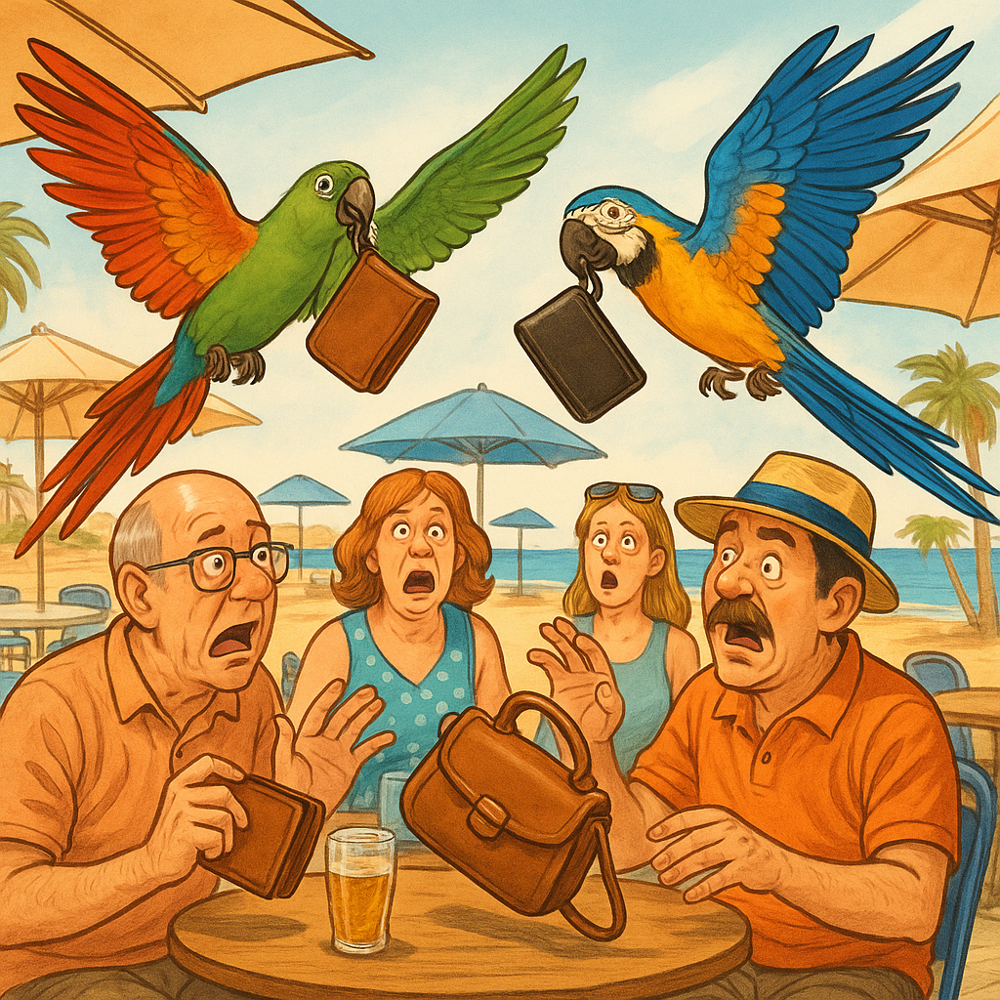
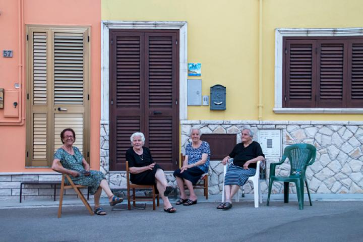
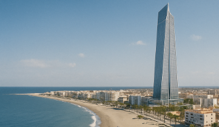
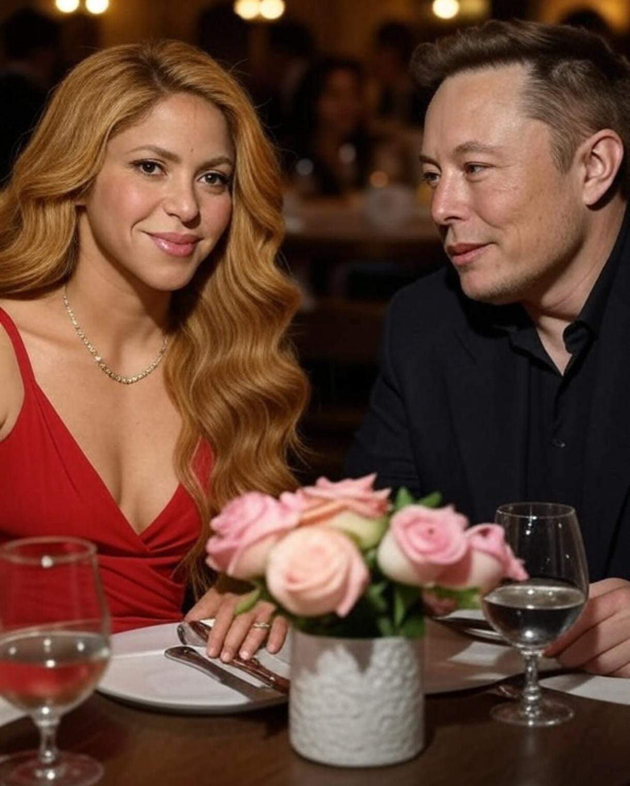

El internacional portugués Cristiano Ronaldo ha sorprendido al mundo del deporte anunciando su fichaje simbólico por el Motril Club de Fútbol. El objetivo, según ha declarado en su perfil de Instagram, es “dar visibilidad al talento joven andaluz”. El club motrileño ha recibido una avalancha de nuevos seguidores y ya planea una gira internacional.
La Policía Nacional ha detenido a tres personas en Cádiz por utilizar loros entrenados para robar carteras y móviles de terrazas y chiringuitos. Los animales, entrenados con premios, actuaban en segundos y entregaban los objetos a sus dueños, que los escondían en mochilas. Se les atribuyen más de 40 robos en la costa andaluza.
La Policía Local de Santa Fé, Granada, publicó un mensaje pidiendo civismo y respeto por el espacio público que desató una ola de indignación, especialmente por parte de las mujeres mayores que suelen disfrutar de su tiempo al aire libre en la calle. Los agentes instaban a los vecinos de Santa Fe a no sentarse en la acera a altas horas de la noche, algo que muchos interpretaron como una nueva prohibición que afectaba especialmente a las mujeres de la localidad.
Un grupo inversor de Dubái ha presentado un proyecto para construir en Motril el rascacielos más alto de Europa, con 420 metros de altura. El edificio incluirá un hotel de lujo, oficinas tecnológicas y un centro comercial flotante. El ayuntamiento ha mostrado interés y se espera que las obras comiencen en 2026.
Según fuentes cercanas al entorno de la cantante, Shakira fue vista cenando a solas con el magnate Elon Musk en un restaurante de lujo en Sevilla. Varios comensales aseguran haberlos visto reír durante horas. Aunque ninguno ha confirmado nada, las redes sociales ya se llenan de teorías sobre una posible relación.
